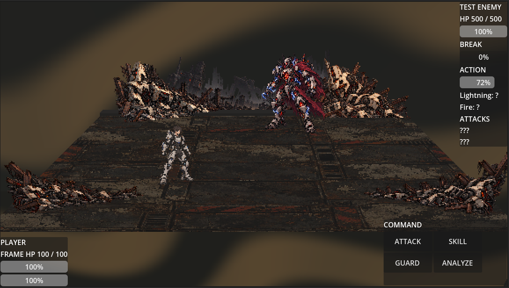

PROJECT EXO
Knowledge Is Survival
In a world buried beneath the remains of an ancient war, forgotten machines hold the secrets of civilization's past.
Master the Machine

Combat Through Knowledge
Discover enemy weaknesses, exploit elemental affinities, and break through enemy defenses using tactical combat decisions.
Frames
Equip powerful mechanical Frames that define your combat abilities, elemental defenses, and tactical options.
Development Status
Combat Prototype
Project Exo is currently in active development using Godot 4. Work is focused on refining the visual combat prototype.